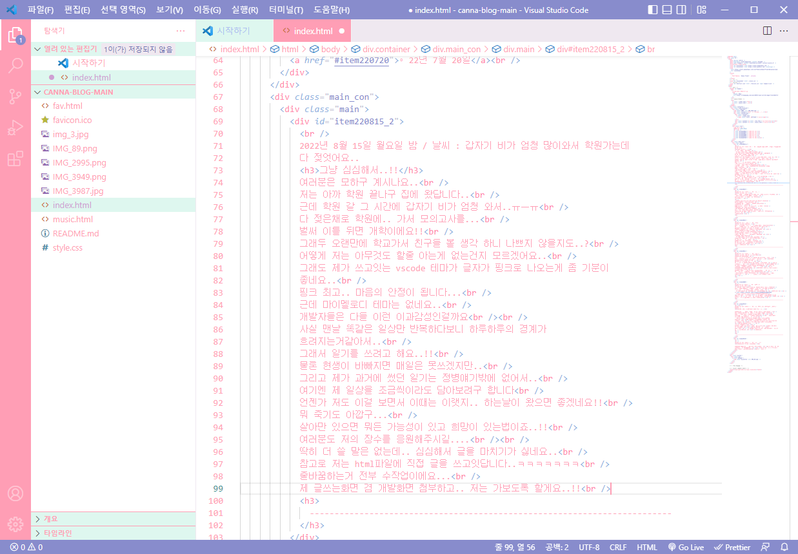

2022년 9월 13일 화요일 / 날씨 : 구름
인생은 멀리서보면 희극이지만 가까이서 보면 비극이라고 한다
구름같은 환자의 삶은 언뜻 보기에 아름답다가까이서 보지 않으면 알수 없는것이 있다
우리는 언제나 이 사실을 기억하고 예의를 지켜야한다
그렇지만 나도 사람이기에 동경하게 되는건 어쩔수 없나보다
-------------------------------------------------------------------------
2022년 9월 13일 화요일 / 날씨 : 구름
오랜만에 정말 휴일같은 휴일이에요
저희 학교는 오늘까지 쉬는날이어가지구오랜만에 집에 혼자서 놀고있어요
사실 저번주는 학교는 안갔지만 수학여행이랑 친척집 가느라 많이 피곤했거든요
그래서 오늘은 아침부터 늦잠자구 밥먹구 일기도 쓰고..
좀이따 산책도 갈 생각이에요..ㅎㅎ
매일 이렇게만 살수 있다면 좋겠네요..
그렇지만 일단 한동안은 이런 날은 오늘이 마지막이겠죠..
아무튼..!! 행복하세요
-------------------------------------------------------------------------
2022년 9월 11일 일요일 / 날씨 : 더워요
평화롭네요
오늘은 늦잠을 자구..친척집(10분거리) 가서 할머니도 보구..
산책도 하구 노래방도 갔다왔어요..
산책하면서 느끼는건데 세상이 정말 평화로운데 공허한거같기도 하고..
공기가 외로웠어요
으음.. 뭔가 회의감이 드네요..
이거 읽으시는분이 있는지는 모르겠는데 사랑해요
-------------------------------------------------------------------------
2022년 9월 2일 금요일 / 날씨 : 모름
개학하니까 많이 바쁘네요..
집에가구싶어요.. 으으..담주는 수학여행인데 원래 에버랜드에 갈 예정이었는데
비때메 롯데월드로 바꼈대요!!
저로써는 좋은 소식이네요.. 비가 안와서 자이로드롭 탈수 있게되면 좋겠어요
근데 학교에서 암것도 안하면서 집에 빨리 보내주면 좋을텐데..
아 그리고 노다메칸타빌레 드라마로 봤는데 재밌더라구요!!
치아키사마 최고....
순정만화 향도 나면서 가벼운 분위기라 좋았네요...!!
아 근데 요새 돈이 없어요..
슬프다..
옷 사고싶은데..
그래도 학교 가면서 규칙적인 생활을 하는게 몸은 힘들지만 정신건강에 도움이 되는거같긴 해요..
크레페 먹고싶다
-------------------------------------------------------------------------
2022년 8월 23일 화요일 밤 / 날씨 : 시원해요
근황
여러분 오랜만이에요..!!저는 개학해가지구 요새 바쁜 나날을 보내구있답니다..
사실 많이 졸려요 그래두 행복하지 않은건 아니에요!!
꽤 갠찮답니다..
물론 학교를 다니는건 정신적으로 좀 힘들긴 해요..
그치만 요즘에는 매주 토요일마다 기다려지는 일들이 있어서 버틸만해요
저번주는 잔나비 콘서트였구 이번주는 피쉬만즈 씨디도 살겸 혼자 인천여행 가서..
인천사는 친구랑 만나기로 했구요..!
다음주는 또 선우정아 콘서트에요..
무료콘서트 최고...
빨리 토요일이 왔으면 좋겠네요..
맛있는거 사준다는데 뭘 먹을지 기대돼요..!!
헤헤.... 가서 바다도 보고 세이수미도 보고 키라라도 보고와야지...
아 참고로 오늘은 귀찮아서 글쓰면서 줄바꿈을 안했어요..
뭐 언젠가 수정할수도잇고 아닐수도 잇고...
암튼 행복하세요..
+) 여기부터는 추후에 추가된 내용입니다.
이 날의 인천여행은 꽤나 즐거웠어요
비록 친구랑 못만나서 혼자 돌아다녔지만요
피쉬만즈 친필사인이 담긴 CD도 구매했답니다
아
음
죽고싶으니까 여기까지만 쓸게요
-------------------------------------------------------------------------
2022년 8월 17일 수요일 저녁 / 날씨 : 화창함☀️
8월 17일의 일기
결국 개학이 와버렸어요음.. 이 날이 오지 않기를 매일 기도했는데
시간은 잔인한거같아요
분명 저도 개학이란걸 벌써 20번은 맞아봤는데
그래도 적응은 안되네요
그치만 좋은 노래를 들으면 살아갈 힘이 나니까 다행인거같아요
저도 이런 곡을 쓰고싶었는데 딱히 재능은 없더라구요
일기를 언제까지 쓸수 있을지는 모르겠네요
딱히 매일 쓸 생각은 아니지만.. 그래도 시간 날때마다 쓰려구요
전에도 말했지만 매일매일 똑같은 일상속에서
조금씩 변해가는.. 혹은 저는 늘 똑같더라도..
시간은 흘러간다는걸 기록하고싶었어요
그러고보니 오늘 학교에서 자신이 좋아하는걸 쓰는 시간이 있었어요
그때는 별로 못썼지만 지금 써보려구요..!!
너무 뜬금없다는 지적은 안 받겠습니다..
우선 저는 음악을 좋아하구.. 어떤 음악인지도 쓰면 너무 길어지니까 안쓸래요
그리고 노래하는것도 좋아하고..
이렇게 직접 일기장 만들어서 일기쓰는것도 최근에 좋아하게 됐어요
그리고... 야구도 좋아하구요..!! 그냥 자는것도 좋아해요
편한 사람들이랑 이런저런 대화 하는것도 좋아한답니다..
아 그리고 폭닥한 가디건도 좋아해요
근데 제가 키가 커가지구 옷 사기가 힘들어요
이쁜 디자인에 사이즈 맞는것도 찾기 힘든데
심지어 그런거를 찾아도 보통 품절이더라구요
아무튼 요새 날씨가 점점 추워지고있어서 좋아요
목도리 매고다닐 날을 기다리고있답니다..
이번 크리스마스에는 딱히 일정이 안생기더라도 혼자 나가서 산책이라도 해야겠어요
작년에는 뭘 했는지.. 편지보고 울었던거밖에 기억이 안나네요
아 그리고 크리스마스라면 캐롤이죠!!
아무튼 이번 크리스마스에도 colormytree.me 를 할 예정이니 많관부..
근데 우울할때 노래를 너무 많이 들었나 점점 효과가 떨어지는거같아요
요새는 the garden이라는 밴드의 orange county punk rock legend 라는 노래가 좋더라구요
이거..쓰다보니 너무 길게 써버려서 이제 마칠때가 된거같아요
내일을 위해서 오늘은 좀 빨리 자려구요
행복하세요
-------------------------------------------------------------------------
2022년 8월 16일 화요일 자정 / 날씨 : 구름..?☁️
여러분에게 크리스마스란 어떤 날인가요
여러분에게 크리스마스라는 날은 어떤 날일까요?우선 저는 기독교인이 아니기때메..
예전부터 크리스마스는 그냥 집에서 노는날이엇어요
그치만 다른 공휴일과는 분위기가 다르죠..!!
사실 제가 제일 좋아하는것들 중엔 크리스마스도 있거든요..
블로그 제목부터 크리스마스를 기다리는 거구..
크리스마스까지 며칠 남앗는지 알려주는 위젯 같은거두 만들어보면 좋을거같네요!!
아무래도 크리스마스는.. 공기부터 좋아요..
길에서 울려퍼지는 캐롤.. 너무 좋아해요..!!
친구들이랑 편지 주고받는거두 좋고...
크리스마스엔 항상 좋은 추억뿐이에요
이거 쓰면서 작년 크리스마스때 사진을 보니..
다시 단발로 돌아가고싶어지네요..ㅋㅋㅋㅋㅋㅋ
작년 겨울도 정말 소중한 추억 투성이였는데 올해도 그럴수 있을까요
조금 눈물나네요..
빨리 겨울이 왔으면 좋겠다...
행복하세요🎄
-------------------------------------------------------------------------
2022년 8월 15일 월요일 밤 / 날씨 : 갑자기 비가 엄청 많이와서 학원가는데 다 젖엇어요..
그냥 심심해서..!!
여러분은 모하구 계시나요..저는 아까 학원 끝나구 집에 왔답니다..
근데 학원 갈 그 시간에 갑자기 비가 엄청 와서..ㅠㅡㅠ
다 젖은채로 학원에.. 가서 모의고사를...
벌써 이틀 뒤면 개학이에요!!
그래두 오랜만에 학교가서 친구들 볼 생각 하니 나쁘지 않을지도..?
어떻게 저는 아무것도 할줄 아는게 없는건지 모르겠어요..
그래도 제가 쓰고잇는 vscode 테마가 글자가 핑크로 나오는게 좀 기분이 좋네요..
핑크 최고.. 마음의 안정이 됩니다...
근데 마이멜로디 테마는 없네요..
개발자들은 다들 이런 이과감성인걸까요
사실 맨날 똑같은 일상만 반복하다보니 하루하루의 경계가 흐려지는거같아서..
그래서 일기를 쓰려고 해요..!!
물론 현생이 바빠지면 매일은 못쓰겠지만..
그리고 제가 과거에 썼던 일기는 정병얘기밖에 없어서..
여기엔 제 일상을 조금씩이라도 담아보려구 합니다
언젠가 저도 이걸 보면서 이때는 이랫지.. 하는날이 왔으면 좋겠네요!!
뭐 죽기도 아깝구...
살아만 있으면 뭐든 가능성이 있고 희망이 있는법이죠..!!
여러분도 저의 장수를 응원해주시길....
딱히 더 쓸 말은 없는데.. 심심해서 글을 마치기가 싫네요..
참고로 저는 html파일에 직접 글을 쓰고잇답니다..ㅋㅋㅋㅋㅋㅋㅋ
줄바꿈하는거 전부 수작업이에요...
제 글쓰는화면 겸 개발화면 첨부하고.. 저는 가보도록 할게요..!!
행복하세요!!

-------------------------------------------------------------------------
2022년 8월 15일 월요일 / 날씨 : 맑음☀️
8월 15일의 잡담..?
오늘은 뭔가 할 얘기가 잇는건 아니구요.. 그냥 심심해서 왔답니다..지금이 월요일이라는게 믿기지 않네요..
아무것도 안하고 물 위에 떠있고싶어요
해파리처럼....
주말동안 아무것도 안했더니 아무것도 기억이 안나요
꿈이랑 현실이 구분이 안되네요..
시나모롤을 타고 구름위로 날아갈수 있을까요
살아있는건 쉽지않네요
뭐가 문제인지 어디서부터 잘못된건지 잘 모르겠어요
이런얘기를 하고싶진 않았는데
이번 가을에는 꼭 가디건을 살거에요..
아마 베이지~갈색 정도 생각하고있어요!!
생각해보니 딱 가을날씨에 입으려면 지금쯤 사야할거같아요
골라둬야겠다..
행복하세요
-------------------------------------------------------------------------
2022년 8월 13일 토요일 / 날씨 : 비🌧
8월 13일의 업데이트..!
오늘은 사이트에 대해서 받은 피드백을 조금.. 반영해봤어요우선은 일기가 보여지는 부분의 배경이 너무 진해서
가독성이 떨어진다! 라는 의견이 있어가지구
옆에있는 박스들과 같은 연핑크로 바꿨답니다..
그리고 두번째로는 모바일로 봤을때
기존에는 본문이 왼쪽에 치우쳐져있었는데
이것도 가운데로 오도록 개선햇답니다..
여기까지가 오늘 만든 부분이에요!! 간단하죠..
일상얘기..조금 하자면
저는 정말 집에서 암것도 안하구잇답니다..
학원을 맨날 가긴 하지만 머 2~3시간 정도구..
그러니 언제든 저랑 놀아요...
그런데 이제 곧 개학이네요.. 끔찍하다..
또 아침일찍 일어날 생각하니까 넘 싫어요
6시 반 기상 너무 비인간적이야..
아무튼 행복하세요..
-------------------------------------------------------------------------
2022년 8월 11일 목요일 / 날씨 : 흐림☁️
8월 11일의 일기 겸 앞으로의 계획
안녕하세요 칸나입니다..오늘은 앞으로 제 블로그 개발 계획을 좀 새워보려구 해요..!!
그리고 html이랑 css까지는 혼자서 할수 있었지만
아무래도 자바스크립트는 하나도 몰라가지구..
냐무님한테 물어보려구요..ㅎ-ㅎ
우선!! 댓글과 좋아요 기능이 젤 급하다구 생각합니다..
물론 댓글 달아줄사람은 없지만
그래두 블로그라면 댓글이 잇어야겟죠!!
그러려면 회원가입과 로그인 기능도 필요하겟네요..
아마 댓글은 로그인하지 않아두 달수있게 할거같지만..!!
그 담은 텍스트에디터가 필요하답니다..
아무래도 일기 쓸때마다 vscode를 켜야하는것두 이상하구
줄바꿈이 필요할때마다 br태그를 입력하는거도 귀찮거든요..ㅎ-ㅎ
그러고나서는 검색기능을 만들면 좋을거같아요!!
만들어야하는게 이렇게 산더미네요..
자바스크립트... 몬가.. 어려워보이지만..
갠찮지 않을까..라는 무책임한 생각..
-------------------------------------------------------------------------
2022년 8월 9일 화요일 / 날씨 : 폭우..☔️
8월 9일의 일기!!
어쩌다보니 일기를 화요일마다 쓰고있네요 아무튼 오랜만이에요오늘은 비가 엄청나게 많이와요.. 사실 어제부터 엄청 왔는데
앞으로 며칠은 더 이렇게 온다고 하네요.. 끔찍...
저는 요새 기분이 좋은거같기도 하고 아닌거같기도 하고
즐거워요!!
https://twitter.com/i/status/1556603431460421632헐 이거 겁나 귀여워요
지금 집에서 혼자 앰프에 핸드폰 연결해서
음악틀어두고 쓰고있는데 감성 대박이에요
좋다..
아무튼 저는 잘 잇답니다 여러분도 행복하세요
-------------------------------------------------------------------------
2022년 7월 26일 화요일 / 날씨 : 맑은거같음🌤️ (아이폰이 구름이라고 하네요..)
오늘의 일기..?라기보다는 그냥 이것저것...
안녕하세요... 저에요.. 뭔가 글을 쓰고싶어서 여기 써봐요..!!빨리 텍스트 에디터? 같은거도 제 블로그에 추가하고싶어요
그렇지만 그걸 직접 만들기엔 무리가 아닐까..
뭔가 방학해가지구 시간이 여유로우니까 좋네요
근데 저 궁금한점이 생겼는데 제가 텍스트를 많이많이 써서
저 핑크색 박스를 넘겨버리면 박스가 알아서 늘어난다거나 그럴까요..?
뭔가 그런거를 flex강의에서 본거같은데 찾아봐야겠네요..
찾아서 해봤는데 flex-grow로도 flex-wrap로도 되지않아요..
그래서 일단 그냥 박스 크기를 늘렸답니다..
냐무님 가르쳐주세요..ㅎ-ㅎ
(이제는 해결완료!!)
하루종일 집에 혼자 있어서 그런지 좀 심심해서
그래서 버튜버를 보고있답니다..
냐무님 에어컨은 잘 고치셨는지 모르겠네요..
저는 모두가 행복했으면 좋겠는데 에어컨이 고장난건 중대한 문제니까요..
행복하세요..
-------------------------------------------------------------------------
2022년 7월 20일 수요일 / 날씨 : 맑음..?🌞
안녕하세요 블로그 주인입니다..
정말정말 반가워요 놀러와주셔서 감사합니다..좀 더 꾸미고싶은데 어캐하는지 잘 몰르겟네요..
(8월 9일의 저는 제 블로그를 꽤나 이쁘게 만들어버렸네요
아틔시 대단해..)
-------------------------------------------------------------------------
2022년 3월 31일 목요일 / 날씨 : 맑음